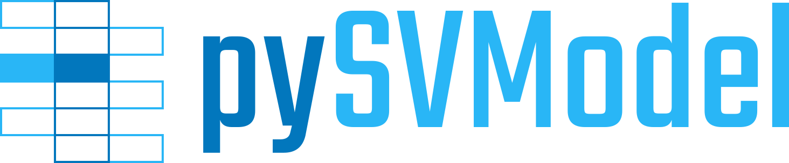

The pySVModel Documentation¶
An abstract System Verilog language model.
Main Goals¶
This package provides a unified abstract language model for System Verilog (incl. Verilog). Projects reading from source files can derive own classes and implement additional logic to create a concrete language model for their tools.
Projects consuming pre-processed System Verilog data (parsed, analyzed or elaborated) can build higher level features and services on such a model, while supporting multiple frontends.
Use Cases¶
TBD
News¶
Sep. 2021 - New Repository Created¶
Moved
VerilogVersionandSystemVerilogVersionclasses frompyEDAA.ProjectModelto this new repository.
Contributors¶
Patrick Lehmann (Maintainer)
License¶
This Python package (source code) is licensed under Apache License 2.0. |br| The accompanying documentation is licensed under Creative Commons - Attribution 4.0 (CC-BY 4.0).
This document was generated on 03.Nov 2024 - 21:02.